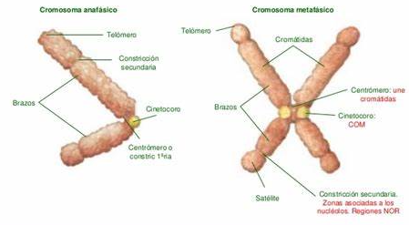

Los cromosomas
Los cromosomas son el material genético de la célula en división, y estos pueden ser de dos tipos:
-
Anafásicos: Los cromosomas están formados por una sóla cromátida
Metafásicos: Los cromosomas están formados por dos cromátidas hermanas

-
CROMÁTIDAS: Son las mitades longitudinales del cromosoma formadas por una molécula de ADN cada una de ellas. Están unidas por el centrómero.
-
CENTRÓMERO: (Constricción primaria) Es un estrechamiento de posición variable que divide al cromosoma en dos fragmentos o brazos.
BRAZOS: Cada una de las porciones de igual o distinta longitud en que divide el centrómero al cromosoma
CINETOCORO: Discos proteicos a cada lado del centrómero a donde se enganchan los microtúbulos del huso.
-
METACÉNTRICOS: El centrómero está en la mitad del cromosoma, los brazos son iguales.
-
SUBMETACÉNTRICOS: El centrómero está un poco desplazado, por lo que un brazo es algo más largo que el otro
ACROCÉNTRICOS: El centrómero está cercano al extremo del brazo, por lo que un brazo es considerablemente más largo que el otro
-
TELOCÉNTRICOS: El centrómero está en el extremo, por lo que únicamente un brazo es distinguible
Partes del cromosoma
Clasificación